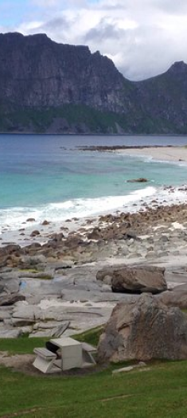

Контакты:
+375(44)747-11-71
+375(29)293-23-23
Наши адреса:
ул.Сырокомли д.28
просп.Победетелей д.17
Кемпинг в живописном фьорде Вы всегда мечтали утром выйти из домика или палатки со сказочным видом на горы и фантасический фьорд - о которых где только не говорят? Тогда данный кемпинг точно для вас, строго говоря - это типичный в хорошем смысле слова кемпинг. есть возможность стать с палаткой. чуть выше на берегу стоянка для домов на колёсах со всеми коммуникациями. Также почти ункальная возможность - аренда самого настоящего хитте.
Кемпинг на о.Лекнес, Лофотены Лофотенские острова - второй наш по популярности норвежский кемпинг-тур. Данный кемпинг находится на берегу Вест-Фьорда Данный место для кемпинга выбрано не случайно, это цетральная часть Лофотенского архипелага, соотвественно, крайне важный “перевалочный” пункт во время путешествия по островам, тут вы можете как провести с комфортом ночь, так и остаться на пару дней. необходимые условия для недолгого пребывания имеются.
1
2
3
...